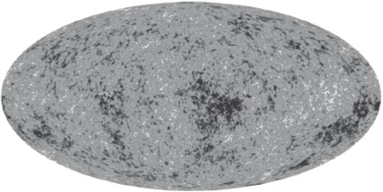

Başlangıçta ve şimdi olduğu, her zaman olacağı gibi.
Gloria Patri
Durup düşünürseniz, evrenin net eğimini, içindeki toplam kütleyi ölçüp sonra genel görelilik denklemlerinin yardımıyla geriye doğru yürüyerek belirlemeye çalışmanın çok büyük sorunlar çıkardığını görürsünüz. Kaçınılmazdır, maddenin keşfedemeyeceğimiz biçimlerde gizlenmiş olup olmadığını merak etmeniz gerekir. Örneğin, galaksiler ve galaksi toplulukları gibi görünür sistemlerin kütleçekim dinamiklerini kullanarak yalnızca bu sistemler içinde madde olup olmadığını araştırabiliriz. Eğer ciddi oranda bir kütle bir şekilde başka bir yerde bulunuyorsa onu gözden kaçıracağız demektir. Görünen bütün evrenin geometrisini doğrudan ölçmeye çalışmak çok daha iyi olabilir.
İyi de görünen evrenin tamamının üç boyutlu geometrisini nasıl ölçeceksiniz? Basit bir soruyla başlayalım, daha kolay olur: Dünya'nın etrafında dolaşmazsanız ya da bir uyduyla yukarıyla çıkıp aşağıya bakmazsanız Dünya'nın yüzeyi gibi iki boyutlu bir nesnenin kıvrılmış olduğunu nasıl belirlersiniz?
Öncelikle bir lise öğrencisine "Bir üçgenin iç açılarının toplamı nedir?" diye sorabilirsiniz. (Yalnız lise seçiminde dikkatli olun, bir Avrupa lisesi olsa iyi olur.) "180 derece" yanıtını alırsınız, çünkü öğrenci hiç kuşkusuz Öklit geometrisi öğrenmiştir. Bir küreninki gibi bükülmüş iki boyutlu bir yüzeyde iç açılarının toplamı 180 dereceyi çok aşan bir üçgen çizebilirsiniz. Söz gelimi aşağıda gösterdiğimiz gibi, ekvator boyunca bir doğru çizdiğinizi, sonra bir dik açıyla kuzey kutbuna çıktığınızı, sonra yine bir dik açıyla ekvatora indiğinizi düşünün. Üç kere doksan iki yüz yetmiş eder, yüz seksen dereceden epey büyüktür. Buyrun buradan yakın!
Öyle anlaşılıyor ki bu basit, iki boyutlu düşünme biçimi doğrudan ve benzer biçimde üç boyuta da taşınabilir, çünkü düz olmayan ya da yaygın deyişle Öklit dışı geometrileri ilk öneren matematikçiler aynı olasılıkların üç boyutta da var olabileceğini fark etmişlerdi. Aslında 19. yüzyılın en ünlü matematikçisi Carl Friedrich Gauss, evrenimizin bükülmüş olması olasılığının büyüsüne kendisini o kadar kaptırmıştı ki 1820'ler ve 1830'larda jeodetik araştırma haritalarından veriler alarak Hohenhagen, Inselberg ve Brocken dağlarının zirveleri arasında çizilen büyük üçgenleri ölçerek uzayda herhangi bir bükülme belirleyip belirleyemeyeceğini anlamaya çalışmıştı. Elbette ki dağlar Dünya'nın kıvrımlı yüzeyinde bulunduğundan, Dünya yüzeyinin iki boyutlu bükülmesi, Dünya'nın yer aldığı arka plandaki üç boyutlu uzayın eğimini araştırmak için gerçekleştirilen ölçümü bulandırır, Gauss'un bunu biliyor olması gerekirdi. Sanırım Gauss, böyle bir etkiyi elde ettiği nihai sonuçtan çıkarmayı, bu çıkarma işleminden sonra geride kalması olası bir eğimin arka plandaki uzayın eğimine atfedilip edilemeyeceğini görmeyi tasarlamıştı.
Uzayın eğimini kesin olarak ölçmeye çalışan ilk kişi, uzak bir diyarda, Rusya'nın Kazan şehrinde yaşamış olan Nikolay İvanoviç Lobaçevski'ydi. Lobaçevski, Gauss'un tersine, "hiperbolik" olarak bilinen, paralel doğruların birleşebileceği eğimli geometrilerin mümkün olabileceğini matbu olarak ileri sürebilme cesaretini göstermiş iki matematikçiden biriydi. Dikkat çekicidir, Lobaçevski (bugün "negatif eğimli" ya da "açık" evrenler dediğimiz) hiperbolik geometriyle ilgili çalışmalarını 1830'da yayınlamıştı.
Lobaçevski, bundan kısa bir süre sonra, bizim üç boyutlu evrenimizin de hiperbolik olup olamayacağını değerlendirirken de "sorunun deneysel bir çözümünü geliştirmek için yıldızların oluşturduğu bir üçgeni inceleme"nin mümkün olabileceğini ileri sürmüştü. Dünya Güneş'in etrafındaki yörüngesinde Güneş'in sağına ve soluna geçtiğinde, altı ay arayla, parlak Sirius yıldızının gözlenmesini önermişti. Bu gözlemler sonrasında da evrenimizdeki herhangi bir eğimin Dünya'nın yörüngesinin yarıçapından en az 166.000 kat daha fazla olması gerektiği sonucuna varmıştı.
Bu biraz büyük bir rakamdır, ama kozmik ölçekte önemsiz denecek kadar küçüktür. Maalesef Lobaçevski'nin fikri doğru olsa da kendisi zamanının teknolojisiyle sınırlıydı. Ama ondan yüz elli yıl sonra bugün, kozmoloji alanındaki en önemli gözlemler, yani Kozmik Mikrodalga Geriplan Işınımı ölçümleri sayesinde işler artık değişmiş ve gelişmiş bulunuyor.
Kozmik Mikrodalga Geriplan Işınımı Büyük Patlama sonrasındaki ışıktan başka bir şey değildir. Gerek duyulması halinde, Büyük Patlama'nın gerçekten olduğuna dair doğrudan bir kanıt sunar, çünkü içinden bugün gördüğümüz yapıların doğduğu çok genç, sıcak evrenimize doğrudan bakıp onun niteliklerini belirleyebilmemizi mümkün kılar.
Kozmik Mikrodalga Geriplan Işınımı'yla ilgili birçok ilgi çekici şeyden biri de New Jersey'de, aslında ne aradıklarına dair en ufak bir fikirleri bile olmayan iki bilim insanı tarafından keşfedilmiş olmasıdır. Bir başka şey de onlarca yıl gayet gözlenebilir bir biçimde, tabir-i caizse burnumuzun dibinde durmuş, ama tümüyle gözden kaçırılmış olmasıdır. Aslına bakarsanız farkında olmaksızın bu ışınımın etkilerini görmüş olacak kadar yaşlısınızdır belki; kablolu televizyon öncesindeki devirleri, kanalların yayınlarını gece yarısı sona erdirdikleri, bütün gece bilgilendirici reklamlar sunmadıkları zamanları görmüşsünüzdür. O zamanlar televizyon kanallarında bir deneme yayını görüntüsü çıktıktan sonra ekranda bir cızırtı oluşurdu. İşte televizyon ekranında gördüğünüz o cızırtının yüzde 1'i Büyük Patlama'dan kalma ışınımdı!
Kozmik Mikrodalga Geri Plan Işınımı'nın kaynağı nispeten daha doğrudandır. Evrenin sonlu bir yaşı olduğundan (13,72 milyar yaşındaydı, hatırlayalım), baktığımız nesne ne kadar uzak olursa zamanda o kadar uzağa bakıyor oluruz (çünkü ışığın bu nesnelerden bize ulaşması daha fazla zaman alır). Yeterince uzağa bakarsak Büyük Patlama'nın ta kendisini görebileceğimizi düşünebilirsiniz. Prensipte bu imkansız değildir, ama pratikte bizimle bu ilk zamanlar arasında bir duvar vardır. Bu satırları yazdığım odanın duvarları gibi fiziksel bir duvar değil, ama büyük ölçüde aynı etkiye sahip bir duvar.
Odamdaki duvarların ardını göremem, çünkü mattırlar. Işığı emerler. Şimdi, zamanda daha da gerilere bakarken, daha genç, aynı zamanda daha sıcak bir evrene bakarım, çünkü evren Büyük Patlama'dan bu yana soğuyor. Zamanda yeterince geriye, evrenin yaklaşık 300.000 yaşında olduğu zamanlara bakarsam evrenin ısısının yaklaşık 3000 derece (Kelvin) olduğunu görürüm. Bu ısıda ortamdaki ışınım o kadar enerjiktir ki evrende en fazla bulunan atomları, hidrojen atomlarını protonlar ve elektronlar olarak bileşenlerine ayırabilir. Bu tarihten önce nötral madde bulunmuyordu. Evrendeki bütün madde ışınımla etkileşim içine giren yüklü parçacıklardan yoğun bir "plazma" oluşturuyordu.
Gelgelelim bir plazma ışınım geçirmez. Plazmanın içindeki yüklü parçacıklar fotonları emer ve onları yeniden salarlar, bu yüzden de ışınım böyle bir maddenin içinden kesintiye uğramaksızın geçemez. Sonuçta, zamanda geriye bakmaya çalışırken, evrendeki maddenin büyük ölçüde böyle bir plazmadan oluştuğu zamanın ötesini göremem.
İşte bu yüzden o duvar odamın duvarları gibi bir duvardır. Odamın duvarlarını, yüzeylerindeki atomların elektronları çalışma masamın üstündeki lambanın ışığını emdikleri, sonra yeniden saldıkları, benimle duvarlar arasındaki hava şeffaf olduğu için görebilirim. Sırf bu yüzden duvarın ışık salan yüzeyinin tamamını görebilirim. Evrende de aynı şey geçerlidir. Evrene baktığımda görüşüm ancak "o son yayılmış yüzeye", evrenin nötral hale geldiği, protonlar ile elektronların birleşerek nötr atomları oluşturduğu noktaya kadar uzanır. O noktadan sonra, evren büyük ölçüde ışınım geçirir hale gelir ve artık evrendeki madde nötral olduğundan elektronların emip yeniden saldığı ışınımı görebilirim.
Bu "son yayılmış yüzey"den her yönden bana doğru ışınım gelmesi gerektiği, evrene dair çizilen Büyük Patlama tablosunun bir tahminidir. Evren o zamandan bu yana yaklaşık 1000 kat genişlediği için, ışınım bize doğru gelirken soğumuştur, bu yüzden de artık mutlak sıfırın üç derece altındadır. Bahtsız iki bilim insanının 1965'te New Jersey'de keşfettiği, daha sonra onlara Nobel Ödülü getiren sinyalin ta kendisidir bu.
Aslına bakarsanız Kozmik Mikrodalga Geri Plan Işınımı'yla ilgili gözlemlere kısa süre önce ikinci bir Nobel Ödülü verildi, gayet de haklı bir ödüldü. "Son yayılmış yüzey"in yüzeyinin bir fotoğrafını çekebilirsek, elimizde yalnızca 300.000 yaşında yeni doğmuş bir evrenin resmi olur. Bir gün çökerek galaksileri, yıldızları, gezegenleri, uzaylıları, başka her şeyi oluşturacak bütün yapıları görebiliriz. Daha da önemlisi bu yapılar, muhtemelen Büyük Patlama'nın ilk anlarındaki ilginç süreçlerin madde ve enerjide yarattığı ilk küçük titreşimlerin temel niteliklerini ve kaynaklarını gölgelemesi olası sonraki bütün o dinamik evrimden etkilenmemiş olacaktır.
Ne var ki amaçlarımız açısından en önemlisi şudur: Bu yüzeyde zamanın kendisinden başka hiçbir şeyin damgasını vurmadığı karakteristik bir ölçek olacaktır. Bunu şu şekilde anlayabiliriz: Son yayılmış yüzey üzerinde, Dünya'dan bakan bir gözlemcinin gördüğü yaklaşık 1 derecelik bir mesafe, yaklaşık 300.000 ışık yılına tekabül edecektir. Şimdi, son yayılmış yüzey, evrenin yaklaşık 300.000 yaşında olduğu bir zamanı yansıttığından ve Einstein da bize uzayda hiçbir bilginin ışık hızından daha hızlı yol alamayacağını söylediğinden dolayı, demek oluyor ki bir yerden gelen bir sinyal, bu yüzeyde o sırada, yaklaşık 300.000 ışık yılından hızlı yol alamaz.
Şimdi 300.000 ışık yılının kapsadığı mesafeden daha küçük bir madde bütünü düşünelim. Böyle bir bütün kendi kütleçekiminden dolayı çökecektir. Ama 300.000 ışık yılının kapsadığı mesafeden daha büyük bir madde bütünü çökmeye bile başlamayacaktır, çünkü henüz bir madde bütünü olduğunu "bilmiyordur." Işık hızında yol alan kütleçekim, bu madde bütününün tamamında yol almış olamaz. Bu yüzden tıpkı Road Runner çizgi filminde koşarken bir uçurumun tepesinde havada asılı kalan Wiley Coyote gibi bu madde bütünü de orada kalakalacak, evrenin kendisinin çökmesine izin verecek kadar yaşlanmasını bekleyecektir!
Bu durum ortaya bir üçgen çıkarır: Üçgenin bir kenarı 300.000 ışık yılı uzunluğundadır, aşağıda görüldüğü üzere, bizimle son yayılmış yüzey arasındaki mesafenin belirlediği bir uzunluktur bu:
Çoktan çökmeye başlamış, çökerlerken mikrodalga geriplan yüzeyinin görüntüsünün üzerinde sıcak lekeler oluşturan en büyük madde yığınları üçgenin 300.000 ışık yılı uzunluğundaki kenarını kapsayacaktır. Eğer bu yüzeyin o zaman göründüğü haliyle bir görüntüsünü elde edebilirsek bu gibi sıcak lekelerin, aldığımız görüntüdeki ortalama olarak en büyük önemli madde yığınları olmalarını bekleyebiliriz.
Ne var ki bu 300.000 ışık yılı uzunluğunun tam olarak 1 dereceye denk gelip gelmemesi aslına bakarsanız evrenin geometrisine bağlıdır. Düz bir evrende ışık huzmeleri doğrular halinde yol alır. Ama açık bir evrende ışık huzmeleri, zamanda geriye doğru izlendiklerinde dışa doğru bükülür. Kapalı bir evrendeyse ışık huzmeleri zamanda geriye doğru izlendiklerinde birleşir. Dolayısıyla son yayılmış yüzey üzerinde bulunan, bir kenarı 300.000 ışık yılı uzunluğunda bir mesafeyi kapsayan üçgen aşağıda görüldüğü üzere evrenin geometrisine dayanmaktadır:
Bu evrenin geometrisinin doğrudan, temiz bir sınanmasıdır. Mikrodalga geri plan ışınımının görüntüsündeki en büyük sıcak lekeler ya da soğuk lekelerin büyüklüğü nedenselliğe (kütleçekimin yalnızca ışık hızında yol alabileceği, bu yüzden de o sırada çökmüş olabilecek en büyük bölgenin, bir ışık huzmesinin o sırada almış olabileceği en uzun mesafeyle belirleneceği gerçeğine) bağlı olduğundan, bizden sabit bir uzaklıktaki sabit bir uzunluğun oluşturduğu, gördüğümüz açının evrenin eğimiyle belirlenecek olması yüzünden son yayılmış yüzeyin basit bir tablosu bize uzay-zamanın geometrisini verebilir!
Böyle bir gözlemde bulunma yolundaki ilk deney, Antarktika'da 1997'de yapılan, yerle bağlantılı bir balonun kullanıldığı BOOMERANG deneyiydi. BOOMERANG Balloon Observations of Millimetric Extragalactic Radiation and Geophysics'in (Balonla Galaksi Dışı Milimetrik Işınım ve Jeofizik Gözlemleri) kısaltması olsa da, deneye bu ismin verilmesinin asıl nedeni daha basitti. Yükseklere çıkacak balona, aşağıda görüldüğü üzere bir mikrodalga radyometresi bağlanmıştı.
Daha sonra bu balon Dünya'nın etrafını dolaştı, Antarktika'da bunu yapmak kolaydır. Gerçekten de Güney Kutbu'nda bunu yapmak kolaydır, çünkü bir daire çizersiniz olur biter. Ama McMurdo İstasyonu'ndan başlayan, kıtanın çevresindeki bu seyahat, kutup rüzgarlarının yardımıyla iki hafta sürdü ve nihayetinde aygıt başlangıç noktasına geri döndü, işte bu yüzden de deneye bumerang adı verildi.
Bu balon seyahatinin amacı basitti. Mutlak sıfırın üç derece üstünde bir ısı yansıtan mikrodalga geri plan ışınımının Dünya üzerindeki daha sıcak maddelerle (Antarktika'da bile ısı, Kozmik Mikrodalga Geri Plan Işınımı'nın ısısından iki yüz dereceden fazla sıcaktır) kirlenmemiş bir görüntüsünü almak için yerden olabildiğince yükselmek, hatta Dünya atmosferinin büyük bölümünün üstüne çıkmak istedik. İdeali bu amaç için uydu kullanmaktır, ama yükseklere çıkabilen balonlar da daha az maliyete aynı işin büyük bölümünü görür.
Her neyse, iki hafta sonra BOOMERANG mikrodalga göğünün küçük bir bölümünü kapsayan, son yayılmış yüzeyden gelen radyasyon örüntüsündeki sıcak ve soğuk lekeleri gösteren bir resimle döndü. Aşağıda BOOMERANG deneyinde gözlenen bölgenin bir görüntüsünü, deneyin ilk fotosunun üzerine bindirilmiş halde görüyorsunuz.
Bu görüntü beni ilgilendirdiği kadarıyla iki amaca hizmet ediyor. Öncelikle, BOOMERANG'ın gördüğü kadarıyla, gökyüzündeki sıcak ve soğuk lekelerin gerçek fiziksel ölçeğini kıyaslama amacıyla öndeki görüntülerle birlikte veriyor. Ama kozmik miyopluğumuz diyebileceğimiz başka bir önemli şeyi de aydınlatıyor. Güneşli bir günde başımızı kaldırıp havaya baktığımızda, deneyin ilk fotoğrafında olduğu gibi mavi bir gökyüzü görürüz. Ama bunun nedeni, görünebilir ışığı görecek şekilde evrilmiş olmamızdır. Bu şekilde evrilmemizin kuşkusuz iki nedeni vardır: Hem Güneş'imizin yüzeyinden gelen ışık görünebilir bölgede zirveye ulaşır hem de başka ışığın başka birçok dalgaboyu atmosferimizde emilir, Dünya'nın yüzeyine ulaşamaz. (Şansımıza öyledir, çünkü bu ışınımın büyük bir bölümü zararlı olabilirdi.) Oysa mikrodalga radyasyonunu "görebilecek" şekilde evrilmiş olsaydık, gece de gündüz de, doğrudan Güneş'e bakmadığımız sürece gökyüzünde doğrudan 13 milyar ışık yılından daha uzakta olan son yayılmış yüzeyin bir görüntüsünü görecektik. BOOMERANG detektörünün getirdiği "görüntü" buydu işte.
BOOMERANG'ın bu görüntünün alındığı ilk uçuşu gerçekten de talihli bir uçuş olmuştu. Antarktika tekinsiz, ne zaman neyin geleceğini bilemediğiniz bir ortamdır. Daha sonra 2003'te yapılan bir uçuşta, balonda çıkan bir sorun, üstüne bir de bir fırtınanın patlak vermesi yüzünden deneyin elden gitmesine ramak kalmıştı. Durumu kurtarmak için balonun yerle bağlantısının kesilmesine karar verilmiş, balon ulaşılamaz bir yere uçup gittikten sonra bir arama-kurtarma ekibi onu Antarktika düzlüklerinde bulmuş, bilimsel veriler içeren bu basınçlı aracı kurtarmıştı.
BOOMERANG'ın getirdiği görüntüyü yorumlamaya geçmeden önce, bu görüntünün kaydettiği sıcak ve soğuk lekelerin gerçek fiziksel boyutlarının son yayılmış yüzeyle ilişkili basit fiziğin kullanılmasıyla sabit olarak belirlendiğini, görüntüdeki lekelerin ölçülen boyutlarının ise evrenin geometrisinden kaynaklandığını bir kez daha vurgulamak istiyorum. İki boyutlu basit bir analoji bu sonucu biraz daha açıklamamıza yardımcı olabilir: İki boyutta, kapalı bir geometri bir kürenin yüzeyine benzer, açık bir geometriyse bir eğerin yüzeyine. Bu yüzeyler üzerine bir üçgen çizersek anlattığım etkiyi düz doğruların kürenin üzerinde birleşmeleri, eğerin üzerinde birbirinden ayrılmaları, düz bir yüzeydeyse tabii ki düz olarak kalmaları şeklinde gözleriz:
Bu yüzden şimdi milyon dolarlık soru şudur: BOOMERANG'ın getirdiği görüntüdeki sıcak ve soğuk lekeler ne kadar büyüktür? BOOMERANG ekibi bu soruyu cevaplamak için bilgisayarlarında sıcak ve soğuk lekelerin açık, kapalı ve düz evrenlerde görülebilecekleri şekilde simüle edilmiş birkaç görüntüsünü hazırladı ve bu görüntüleri asıl mikrodalga göğünün (yine yanlış renkli) bir görüntüsüyle karşılaştırdı:
Aşağıda, solda simüle edilmiş kapalı bir evrene ait görüntüyü incelerseniz ortalama lekelerin asıl görüntüdekinden büyük olduğunu görürsünüz. Sağdaysa ortalama leke büyüklüğü daha küçüktür. Ama simüle edilmiş düz bir evreni yansıtan ortadaki görüntüde ise lekeler neredeyse aslının aynısıdır. Kuramcıların umut ettikleri matematiksel olarak güzel evren, galaksi topluluklarının tartılmasına dayalı tahminlerle kuvvetle çelişmesine rağmen bu gözlemle doğrulanmış gibi görünüyordu.
Aslına bakarsanız evrenin düz olmasını öngören tahminlerle BOOMERANG'ın aldığı görüntü arasındaki uyuşma fena halde şaşırtıcıdır. BOOMERANG ekibi alınan görüntüdeki lekeleri inceleyerek ve son yayılmış yüzeyin bu görüntüyü yansıttığı zamanda ciddi biçimde içe çökmesine daha vakit olan en büyük lekeleri arayarak şöyle bir grafik hazırlamıştır:
Veriler nokta halinde gösterilmiştir. Grafikteki doğru evrenin düz olmasına ilişkin tahminleri yansıtır, en büyük leke ise 1 derece yakınlarında görülmektedir!
BOOMERANG deneyinin sonuçlarının yayınlanmasından bu yana geçen zaman içinde NASA mikrodalga geri plan ışınımının incelenmesi amacıyla çok daha duyarlı bir uydu incelemesi başlattı: Wilkinson Microwave Anisotropy Probe (WMAP / Wilkinson Mikrodalga Anizotropi Araştırması). Princeton Üniversitesi'nde çalışmış, Bell Laboratuvarları'nın fizikçileri onları atlatmasa Kozmik Mikrodalga Geri Plan Işınımı'nı keşfetmiş olacak Princetonlı fizikçilerden biri olan fizikçi David Wilkinson'ın adını taşıyan bu proje Haziran 2001'de başlatıldı. Uydu Dünya'dan 1,5 milyon mil uzağa, mikrodalga göğünü güneş ışınlarından uzak bir şekilde izleyebileceği bir mesafeye yerleştirildi. Yedi yıl boyunca mikrodalga göğünün tamamının (altındaki Dünya'nın varlığına uyması gereken BOOMERANG gibi bir kısmının değil) görüntülerini şimdiye kadar olmadığı kadar büyük bir kesinlikle aldı.

Burada mikrodalga göğünün tamamı bir düzleme yansıtılmıştır, tıpkı bir kürenin yüzeyini düz bir haritaya yansıtabildiğimiz gibi. Bizim galaksimizin bulunduğu düzlem, bu haritada ekvatordadır. Galaksimizin bulunduğu düzlemin 90 derece üzeri bu haritanın Kuzey Kutbu, 90 derece altı ise haritanın Güney Kutbu'dur. Ne var ki yalnızca son yayılmış yüzeyden gelen ışınımın gösterilebilmesi için galaksimizin görüntüsü bu haritadan çıkarılmıştır.
Bu gibi incelikli verilerle evrenin geometrisine ilişkin daha kesin bir tahmin geliştirilebilir. BOOMERANG görüntüsünde gördüğümüze benzer bir WMAP görüntüsü, yüzde 1'e yaklaşan bir hata payıyla düz bir evrende yaşadığımızı doğrulamaktadır! Kuramcıların beklentileri haklıdır. Ama bu sonuçla, daha önceki bölümde anlattığım sonuç arasında belirgin bir tutarsızlık olmasını görmezden gelemeyiz. Galaksilerin ve galaksi topluluklarının kütlelerini ölçerek evreni tarttığımızda, evrenin düz olması için gerekli kütle miktarından üç kat daha az bir değere ulaşıyoruz. Bir şeyin artması gerekiyor!
Kuramcılar evrenin düz olduğuna ilişkin tahminlerinden dolayı birbirlerinin sırtını sıvazlıyadursunlar, hiç kimse doğanın, evrenin geometrisine ilişkin tahminlerde, kütlenin ölçülmesi ile eğimin doğrudan ölçülmesi arasında ortaya çıkan çelişkiyi çözecek bir sürpriz yapmasına hazır değildi. Öyle anlaşıldı ki evrenin düz olması için gereken, ama ortada görünmeyen enerji kelimenin tam anlamıyla burnumuzun dibine gizlenmişti.